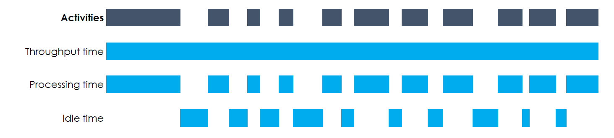
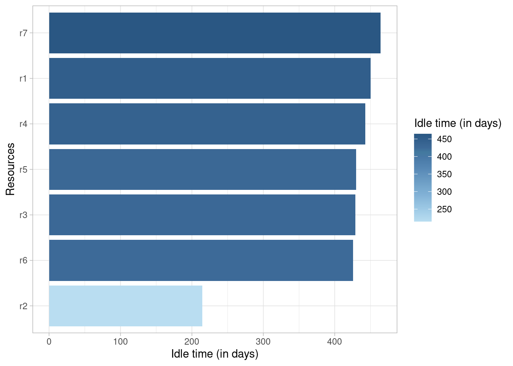
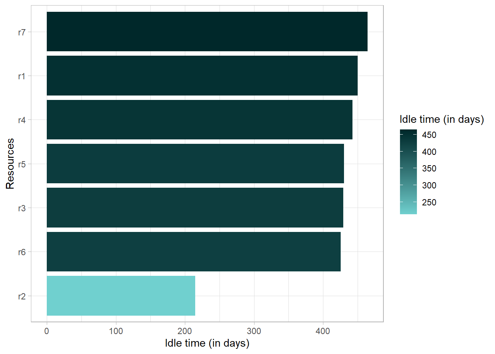
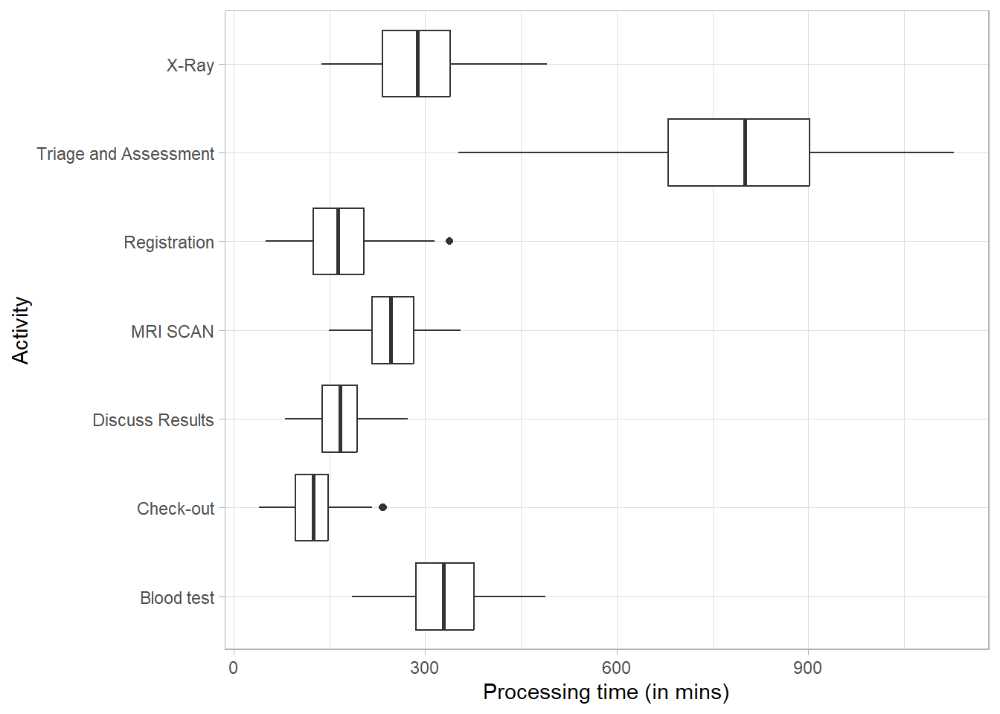

Performance Analysis
The metrics for exploring and describing event data which are available are based on literature in the field of operational excellence and are organized in the following (sub)categories
- Time perspective
- Organizational perspective
- Structuredness perspective
- Variance
- Rework
Time perspective
Three different time metrics can be computed:
- throughput time: the time between the very first event of the case and the very last
- processing time: the sum of the duration of all activity instances
- idle time: the time when no activity instance is active
The duration of an activity instance is the time between the first and the last event related to that activity instance. In case several activity instances within a case overlap, processing time for that overlap will be counted twice. The figure below shows a schematic overview of different time metrics.

Idle Time
The idle time is the time that there is no activity in a case or for a resource. It can only be calculated when there are both start and end timestamps available for activity instances. It can be computed at the levels trace, resource, case and log, and using different time units.
patients %>%
idle_time("resource", units = "days")## # A tibble: 7 × 2
## employee idle_time
## <fct> <drtn>
## 1 r7 464.4199 days
## 2 r1 450.2124 days
## 3 r4 442.6260 days
## 4 r5 430.1764 days
## 5 r3 429.1064 days
## 6 r6 425.5362 days
## 7 r2 214.7436 daysThe output of all metrics in edeaR can be visualized by supplying it to the plot function.
patients %>%
idle_time("resource", units = "days") %>%
plot()
Processing Time
The processing time can be computed at the levels log, trace, case, activity and resource-activity. It can only be calculated when there are both start and end timestamps available for activity instances.
patients %>%
processing_time("activity") %>%
plot
Throughput Time
The throughput time is the time form the very first event to the last event of a case. The levels at which it can be computed are log, trace, or case.
patients %>%
throughput_time("log") %>%
plot()
Copyright © 2023 bupaR - Hasselt University